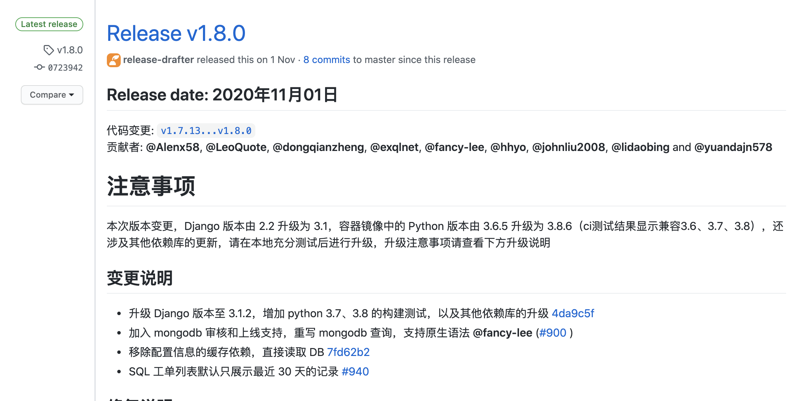
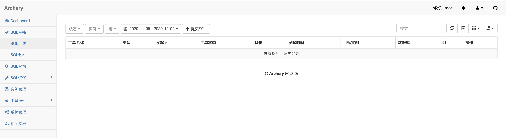

什么是Archery？
Archery是archer的分支项目，定位于SQL审核查询平台，旨在提升DBA的工作效率，支持多数据库的SQL上线和查询，同时支持丰富的MySQL运维功能，所有功能都兼容手机端操作。
Archery 官网
系统体验
| 账号 | 密码 |
|---|---|
| archer | archer |
安装 Archery
安装 Docker
CentOS 7 (使用yum进行安装)
step 1: 安装必要的一些系统工具
sudo yum install -y yum-utils device-mapper-persistent-data lvm2 |
Step 2: 添加软件源信息
sudo yum-config-manager --add-repo http://mirrors.aliyun.com/docker-ce/linux/centos/docker-ce.repo |
Step 3: 更新并安装Docker-CE
sudo yum makecache fast |
Step 4: 开启Docker服务
sudo systemctl start docker |
安装 docker-compose
Compose 是用于定义和运行多容器 Docker 应用程序的工具。通过 Compose，您可以使用 YML 文件来配置应用程序需要的所有服务。然后，使用一个命令，就可以从 YML 文件配置中创建并启动所有服务。
curl -L "https://github.com/docker/compose/releases/download/1.24.1/docker-compose-$(uname -s)-$(uname -m)" -o /usr/local/bin/docker-compose |
docker 部署 Archery
下载 Releases文件，解压后进入docker-compose文件夹

# 启动 |
登陆 Archery
